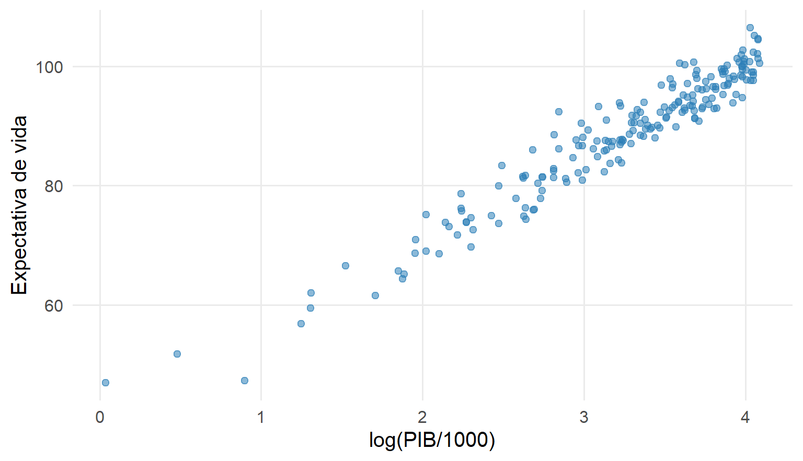
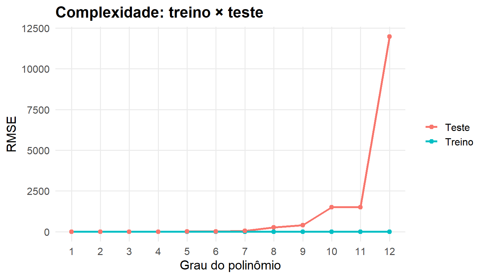
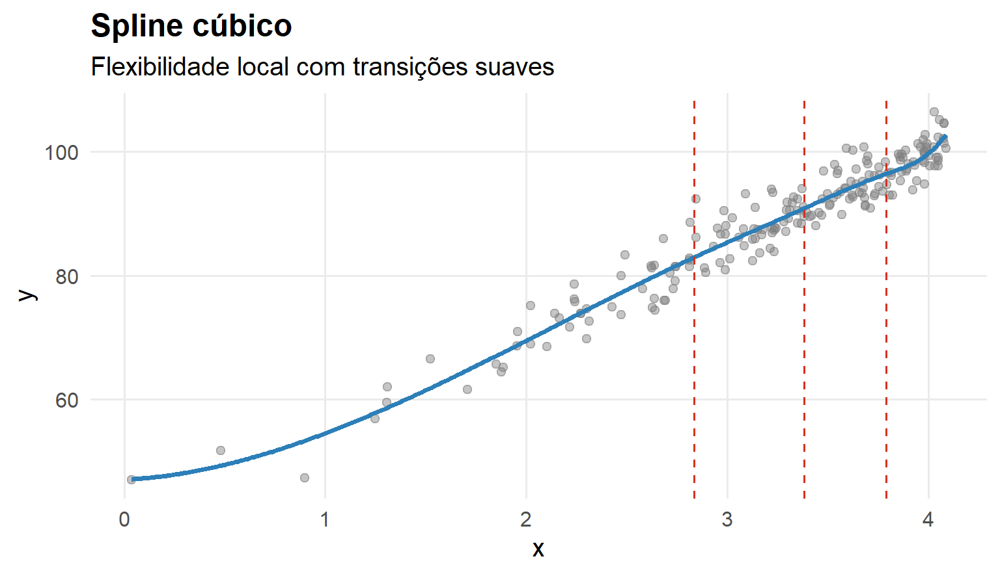
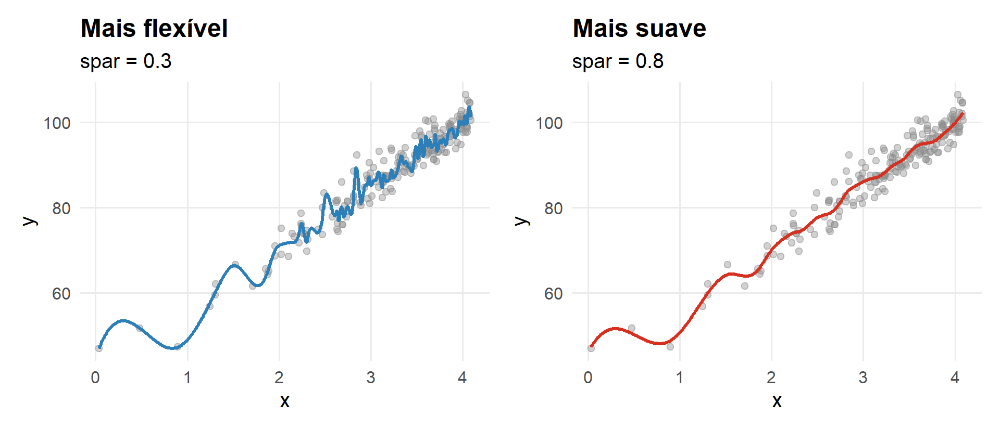

Parte I : Aprendizado Supervisionado
Flexibilidade: Funções de Base, Polinômios, Splines e Séries
De onde partimos?
Nas últimas aulas, escolhemos
\[ \mathcal G_{\text{linear}} = \{g(x)=\beta_0+\beta_1x\} \]
e aprendemos os parâmetros por mínimos quadrados.
Mas os resíduos mostraram algo importante:
\[ \boxed{\text{uma reta pode ser simples demais para representar }r(x)} \]
A pergunta desta semana
Como aumentar a flexibilidade do modelo usando representações mais ricas das covariáveis?
Vamos construir a sequência
\[ \boxed{\text{reta}} \rightarrow \boxed{\text{polinômios}} \rightarrow \boxed{\text{splines}} \rightarrow \boxed{\text{suavização}} \]
Polinômios e funções de base
Além da reta
Uma primeira extensão é
\[ g(x) = \beta_0+\beta_1x+\beta_2x^2+\cdots+\beta_px^p \]
Para \(p=1\), recuperamos a reta.
Para \(p>1\), permitimos curvatura.
Isso ainda é regressão linear?
Sim.
O modelo é não linear em \(x\), mas continua linear nos parâmetros:
\[ g(x) = \beta_0+ \beta_1b_1(x)+\cdots+\beta_dp_p(x), \]
com
\[ b_j(x)=x^j \]
Funções de base
A ideia geral é substituir \(x\) por novas representações:
\[ x \longrightarrow \big( b_1(x),b_2(x),\ldots,b_K(x) \big) \]
Depois ajustamos
\[ g(x)= \beta_0+\sum_{k=1}^{K}\beta_kb_k(x) \]
Muitos modelos aparentemente diferentes podem ser entendidos como regressão linear sobre diferentes funções de base.
PIB × expectativa de vida

Vamos usar \(x=\log(PIB/1000)\) para visualizar claramente o efeito da complexidade.
Grau 1

Graus 1, 4 e 12

Aumentar o grau aumenta a flexibilidade da classe.
O grau é um hiperparâmetro
Em
\[ g_p(x)=\beta_0+\sum_{j=1}^{p}\beta_jx^j, \]
os coeficientes
\[ \beta_0,\ldots,\beta_p \]
são estimados durante o treinamento.
O grau \(p\) define a complexidade da classe antes do ajuste.
Treinamento × seleção de complexidade
Para um grau fixado:
\[ \widehat{\boldsymbol\beta}_p = \arg\min_{\boldsymbol\beta} RSS_p(\boldsymbol\beta) \]
Mas ainda precisamos escolher \(p.\)
Portanto existem dois problemas diferentes:
\[ \boxed{\text{estimar parâmetros}} \qquad\text{e}\qquad \boxed{\text{selecionar complexidade}} \]
Erro de treinamento
À medida que ampliamos a classe de modelos,
\[ \mathcal G_1 \subset \mathcal G_2 \subset \cdots, \]
o erro mínimo de treinamento não pode aumentar:
\[ RSS_{p+1}\le RSS_p \]
Isso parece ótimo…
…mas o teste pode piorar

A mensagem central
\[ \boxed{ \text{mais flexível} \not\Rightarrow \text{melhor generalização} } \]
A complexidade precisa ser escolhida com dados que não estejam sendo usados para estimar os coeficientes.
Por que graus muito altos são problemáticos?
Polinômios são funções globais.
Alterar um coeficiente pode modificar a curva em praticamente todo o domínio.
Além disso, nas extremidades:
- pequenas mudanças nos dados podem produzir grandes mudanças na curva;
- extrapolação pode se tornar extremamente instável;
- graus altos podem produzir oscilações artificiais.
Um modelo muito flexível em diferentes amostras

A flexibilidade excessiva pode aumentar a variabilidade do estimador.
Splines e suavização
Uma alternativa aos polinômios globais
Em vez de usar uma única função complexa em todo o domínio, podemos construir funções por partes.
Ideia:
\[ \boxed{ \text{ajustes locais} + \text{restrições de continuidade} } \]
Isso nos leva aos splines.
Primeiro: uma função linear por partes
Escolha nós
\[ \xi_1,\xi_2,\ldots,\xi_K \]
Uma base simples usa
\[ (x-\xi_k)_+ = \begin{cases} x-\xi_k, & x>\xi_k,\\ 0, & x\le\xi_k \end{cases} \]
e
\[ g(x)= \beta_0+\beta_1x+ \sum_{k=1}^K\gamma_k(x-\xi_k)_+ \]
O que um nó faz?
Um nó permite que a inclinação mude a partir de determinada região.
Antes do nó:
\[ \text{inclinação}=\beta_1 \]
Depois:
\[ \text{inclinação}=\beta_1+\gamma_k \]
Assim, ganhamos flexibilidade local.
Spline linear com nós

Por que usar splines cúbicos?
Funções lineares por partes apresentam mudanças abruptas de inclinação.
Splines cúbicos usam polinômios de grau 3 em cada região e impõem suavidade nas junções.
Tipicamente exigimos continuidade de:
\[ g(x),\qquad g'(x),\qquad g''(x) \]
Spline cúbico

Polinômio × spline
Polinômio
\[ g(x)=\sum_{j=0}^p\beta_jx^j \]
- comportamento global;
- grau controla flexibilidade;
- pode oscilar nas extremidades.
Spline
\[ g(x)=\sum_{k=1}^K\beta_kb_k(x) \]
- flexibilidade local;
- nós controlam onde a curva pode mudar;
- geralmente mais estável.
Quantos nós?
Mais nós:
\[ \Rightarrow \text{maior flexibilidade}. \]
Menos nós:
\[ \Rightarrow \text{curva mais rígida}. \]
Surge novamente o mesmo problema:
\[ \boxed{\text{como controlar a complexidade?}} \]
Outra estratégia: penalizar a rugosidade
Em vez de escolher poucos nós, podemos permitir uma função bastante flexível e penalizar curvas excessivamente irregulares:
\[ \boxed{ \sum_{i=1}^{n} (y_i-g(x_i))^2 + \lambda \int [g''(t)]^2dt } \]
Esse é o princípio do smoothing spline.
Duas forças em competição
\[ \underbrace{ \sum_i(y_i-g(x_i))^2 }_{\text{ajuste aos dados}} + \lambda \underbrace{ \int[g''(t)]^2dt }_{\text{rugosidade}} \]
O parâmetro \(\lambda\) controla o compromisso entre ajuste e suavidade.
O papel de \(\lambda\)
Se
\[ \lambda\rightarrow0, \]
a penalização enfraquece e a curva pode se tornar muito flexível.
Se
\[ \lambda\rightarrow\infty, \]
a penalização domina e a solução se aproxima de uma reta.
Smoothing spline: duas suavizações

O parâmetro de suavização é um hiperparâmetro
Novamente:
Treinamento
estima os coeficientes que definem a curva.
Seleção de modelo
escolhe o nível de suavização.
\[ \boxed{ \lambda\ \text{ou spar} \quad\longleftrightarrow\quad \text{complexidade} } \]
Representações flexíveis em problemas supervisionados
A mesma base pode alimentar tarefas diferentes
\[ \boldsymbol\phi(x)=(\phi_1(x),\ldots,\phi_K(x))^t \] A representação pode ser utilizada tanto por um modelo de regressão quanto por um classificador probabilístico
Séries ortogonais
Séries ortogonais
Outra estratégia para estimar uma função desconhecida é representá-la em uma base:
\[ f(x)=\sum_{j=1}^{\infty}\theta_j\phi_j(x) \]
Na prática, truncamos a expansão:
\[ \boxed{ f_m(x)=\sum_{j=1}^{m}\theta_j\phi_j(x) } \]
e estimamos apenas os primeiros \(m\) coeficientes.
O que significa ortogonalidade?
As funções da base satisfazem, para um produto interno apropriado,
\[ \langle\phi_j,\phi_k\rangle=0, \qquad j\neq k \]
Isso reduz a interferência entre os componentes da representação.
Exemplos incluem bases trigonométricas e famílias de polinômios ortogonais.
Estimação dos coeficientes
Em uma formulação simples,
\[ \widehat\theta_j = \frac1n\sum_{i=1}^{n}Y_i\phi_j(X_i) \]
Assim,
\[ \widehat f_m(x) = \sum_{j=1}^{m}\widehat\theta_j\phi_j(x) \]
O número de termos \(m\) controla a complexidade.
Viés × variância reaparece
\[ m\text{ pequeno} \Rightarrow \text{representação rígida} \Rightarrow Bias\uparrow \]
\[ m\text{ grande} \Rightarrow \text{representação flexível} \Rightarrow Var\uparrow \]
Portanto, \(m\) é um hiperparâmetro.
Séries × splines
Séries
Aproximação global:
\[ f_m(x)=\sum_{j=1}^{m}\theta_j\phi_j(x) \]
Cada função de base pode atuar sobre todo o domínio.
Splines
Aproximação por partes, com comportamento controlado por nós.
Mudanças locais podem ter efeito mais localizado.
As duas estratégias são exemplos de expansões em funções de base.
Uma estrutura comum
Polinômios, splines, smoothing splines e LOESS parecem métodos diferentes.
Mas todos respondem à mesma pergunta:
\[ \boxed{ \text{quanta flexibilidade devemos permitir a }\widehat g? } \]
Escala de flexibilidade
\[ \text{Reta} \longrightarrow \text{Polinômio} \longrightarrow \text{Spline} \longrightarrow \text{Suavizador muito local} \]
À medida que a flexibilidade aumenta:
- o viés tende a diminuir;
- a variabilidade tende a aumentar;
- o erro de treino tende a cair;
- o erro de generalização não necessariamente cai.
Como escolher a complexidade?
Não devemos escolher grau, número de nós ou suavização observando apenas o erro de treinamento.
A lógica correta é
\[ \boxed{ \text{candidatos} \rightarrow \text{validação} \rightarrow \text{seleção} \rightarrow \text{teste final} } \]
Essa lógica será usada repetidamente ao longo da disciplina.
Comparação dos métodos
| Método | Controle principal de flexibilidade |
|---|---|
| Regressão linear | número/forma das covariáveis |
| Polinomial | grau \(d\) |
| Spline de regressão | número/posição dos nós |
| Smoothing spline | penalização \(\lambda\) |
| LOESS | span |
Síntese
\[ \boxed{ g(x)=\beta_0+\sum_{k=1}^{K}\beta_kb_k(x) } \]
é uma ideia extremamente poderosa.
Mudando as funções de base e o controle de complexidade, obtemos diferentes famílias de modelos.
Três ideias para levar
- Não linear em \(x\) não significa não linear nos parâmetros.
- Flexibilidade resolve viés, mas pode aumentar variância.
- Hiperparâmetros de complexidade devem ser escolhidos por desempenho fora da amostra.
EST335 — Semana 3